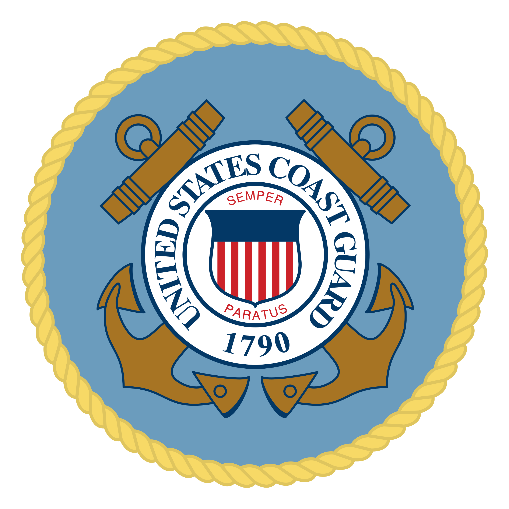
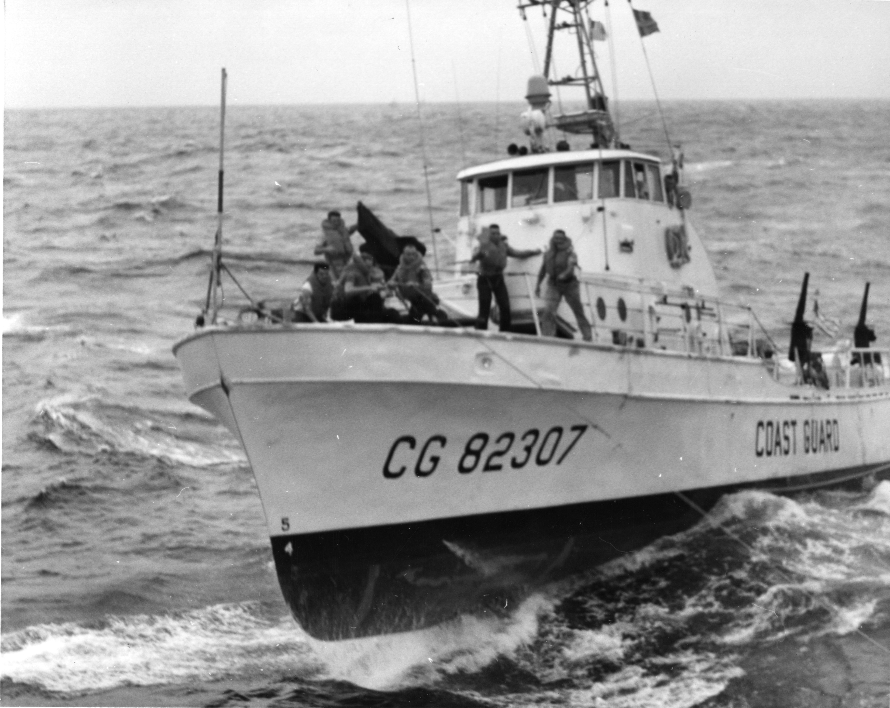

Description
The Coast Guard is a unique branch of the military responsible for an array of maritime duties, from ensuring safe and lawful commerce to performing rescue missions in severe conditions.
Description
The Coast Guard is a unique branch of the military responsible for an array of maritime duties, from ensuring safe and lawful commerce to performing rescue missions in severe conditions.
History

The Coast Guard traced its roots to the small fleet of vessels maintained by the United States Department of the Treasury beginning in the 1790s to enforce tariffs (an important source of revenue for the new nation).
The modern Coast Guard was created in 1915, when the Revenue Cutter Service merged with the U.S. Life-Saving Service. The Lighthouse Service and the Bureau of Marine Inspection and Navigation were absorbed by the Coast Guard 1939 and 1942 respectively.
Careers
The following jobs include officer and enlisted options:
- Engineering & Electronics
- Health Services
- Intelligence
- Scientists
Click here to explore more.